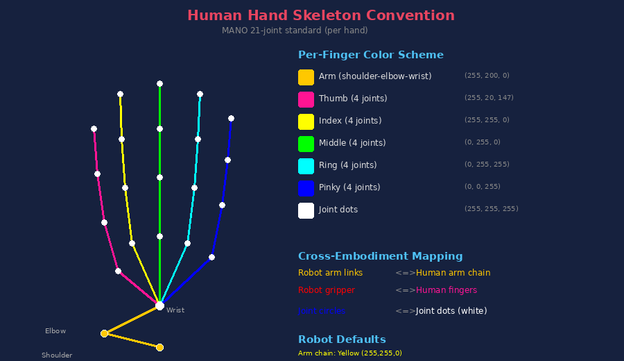

Skeleton + gripper overlay rendering results across all processed datasets. Generated 2026-04-01.
⚠️ Known issue: Skeleton alignment varies by camera due to extrinsic calibration quality. Gripper orientation differs from actual due to URDF ee_link frame convention mismatch. View detailed analysis →
Videos removed — see analysis above for calibration details.
ⓘ Note: Franka gripper feedback (gripper_info) is binary — reports open/closed state rather than continuous position. Gripper transitions appear as instant jumps. No continuous finger position signal is available in this dataset.
⚠ Known issue: Cameras with f-prefix serials (e.g. f0271510) show skeleton offset due to poor base alignment calibration. These cameras are excluded from the pipeline. Only digit-serial cameras are used for rendering.
View detailed analysis →
Videos removed — gripper-only rendering available.
superset source is most reliable (~91% accuracy); h5 fallback is poor (~33%). Cameras within the same episode can have different quality.
✅ New dataset! Camera extrinsic computed via FK (head pan/tilt joints recorded). 23,762 episodes, 87 hours, 7 household tasks.
These datasets have been investigated but cannot produce full skeleton+gripper overlay due to missing calibration, URDF, or joint data.
| Dataset | Robot(s) | Episodes | Has Video | Missing for Rendering | Available Data |
|---|---|---|---|---|---|
| RealSource Full Calibration | RealMan RS-02 dual-arm (7+7 DOF) | 11,428+ | 3 cams 1280x720 @30fps H.264 |
|
|
| RoboMIND 2.0 Partial Calibration | Tiangong Pro humanoid (7+7 DOF), Tianyi 2.0 bimanual (7+7 DOF), AgileX Piper (6+6 DOF), Franka Panda (7+7 DOF), UR5e (6 DOF), UR5+Inspire DexHand (6+12 DOF), ARX X5A (6+6 DOF) | 310K+ total (7 robots, 15 sub-repos) | 1–6 cams JPEG-in-HDF5; RealSense D435if; 480×640 to 1280×720; ~55 Hz |
|
|
| RoboCOIN Split Aloha | Agilex Cobot (bimanual, 6+6 DOF) | 499 | 3 cams (head, L/R wrist) |
|
|
| RoboCOIN RMC-AIDA-L | RealMan RMC-AIDAL (bimanual, 7+7 DOF) | 356 | Partial (142 of 356 left wrist only) |
|
|
| RoboCOIN AIRBOT MMK2 | AiBot MMK2 (bimanual, 6+6 arms, 12+12 dex hands) | 49 | 3 cams (head, L/R wrist) |
|
|
| RoboCOIN Cobot Magic | Agilex Cobot Decoupled Magic (bimanual, 6+6 DOF) | 1,170 | Not downloaded |
|
|
| RoboCOIN R1 Lite | Galaxea R1 Lite (bimanual, 7+7 DOF) | 101 | 4 cams 1280x720@30fps AV1 |
|
|
| RoboCOIN LeJu Robot | LeJu Humanoid (40 DOF: 7 arm + 6 hand + 6 leg per side + 2 head) | 444 | Not downloaded |
|
|
| ActionNet | Fourier T1 (humanoid, bimanual dex hands, 32 DOF) | 30,121 | 1 cam + depth (MP4 + MKV FFV1) |
|
|
| Humanoid Everyday | Unitree G1 & H1 (humanoid with dex hands) | 82 | 1 RGB + depth + LiDAR 640x480 |
|
|
| FMB (Original) | Franka Panda | ~8,600 | 4 cams (2 side, 2 wrist) 256x256 |
|
|
| Galaxea R1 Lite (RLDS) | Galaxea R1 Lite (dual-arm mobile) | 1,784 | 3 RGB 224x224 + 3 depth |
|
|
| BridgeData V2 | WidowX | ~60k (1024 shards) | 256x256 JPEG |
|
|
| RoboNet | Sawyer, WidowX, KUKA, Franka, Baxter, Fetch, Google R3 | 700 (sample, 9 embodiments) | MP4 in HDF5 |
|
|
| RoboTurk | Sawyer | 1,995 | Referenced but not downloaded |
|
|
| RoboMIND | Multiple (raw data 24T) | Unknown (large) | Not investigated |
|
|
| ALOHA | 2x ViperX 300 (bimanual, 6+6 DOF) | ~50 demos/task | 3 cams (top + 2 wrist) |
|
|
| Mobile ALOHA | 2x ViperX 300 + AgileX Tracer mobile base | ~50 demos/task, ~47GB | 3 cams (high + 2 wrist) |
|
|
| AIST Bimanual | ALOHA system (2x ViperX 300, bimanual 14-DOF) | 10,000+ eps, 100+ tasks | No calibration |
|
|
| RealSource | RealMan dual-arm RS-02 (7+7 DOF) + exoskeleton teleop | 11,428 eps, 14M frames, 35 tasks | Head-cam overlay unreliable |
|
|
| UMI | Hardware-agnostic (Franka, UR5, etc.) | Community-sourced | GoPro fisheye RGB |
|
|
| Dobb-E (HoNY) | Hello Robot Stretch (deployment); iPhone on reacher-grabber (collection) | 5,620 demos, 22 homes | Not downloaded |
|
|
| ARMBench | Amazon warehouse robots (Sparrow, Vulcan Stow) | 235K+ activities, 190K+ objects | Not downloaded |
|
|
| RoboSet (Standalone) | Franka Panda | 7,500 trajs, 38 tasks | Not downloaded |
|
|
| RT-1 | Google EDR (7-DOF + gripper + mobile base) | 130K+ eps, 700+ tasks | Not downloaded |
|
|
| BC-Z | Google 7-DOF arm + 2-finger gripper | 25,877 eps, 100 tasks | Not downloaded |
|
|
| DexH2R | UR10e + ShadowHand (30-DOF: 6 arm + 24 hand) | 4,282 trials, 39 subjects, 56 objects | Investigated (download blocked) |
|
|
| DexCanvas | Human hand (MANO model, dexterous) | 7,000 hours, 30M+ frames | Not downloaded |
|
|
| DexCap | Human hand mocap → robot dexterous hand | ~90 min, 34 eps | Not downloaded |
|
|
| OXE: ManiSkill Has Calibration | Franka Panda | 235 (sample) | 2 cams + depth 256x256 |
|
|
| OXE: IO-AI Tech Has Calibration | Human/EEF-controlled | 3,847 | 5 cams 360x640 + depth |
|
|
| OXE: Stanford RoboCook | Franka Panda | 2,460 | 4 RGB + 4 depth 256x256 |
|
|
| OXE: RoboSet | Franka Panda | 18,250 | 4 cams 240x424 @5Hz |
|
|
| OXE: TACO Play | Franka Panda | 3,242 | 2 cams (200x150 + 84x84) @15Hz |
|
|
| OXE: FMB | Franka Panda | 8,611 | 4 cams + depth 256x256 |
|
|
| OXE: iamlab CMU | Franka Panda | 90 | 2 cams (640x360 + 320x240) |
|
|
| OXE: Conq Hose Manipulation | Boston Dynamics Spot | 139 | 3 cams (2 fisheye + 1 hand) |
|
|
| OXE: Plex RoboSuite | Franka Panda + others | 25 (sample) | Multiple cameras |
|
|
| OXE: SPOC | Hello Stretch (simulated) | 233,151 | 2 cams 224x384 |
|
|
| OXE: RoboVQA | Google Robot | 3,335,297 | 1 RGB + depth |
|
|
| OXE: UTokyo PR2 (2 datasets) | PR2 | 256 | 1 cam 128x128 @10Hz |
|
|
| UMI | Hardware-agnostic (UR5/Franka deploy) | 2,543 | GoPro fisheye, 60fps |
|
|
| RT-1 | Google EDR (7 DOF + gripper) | 87,212 | 256×320, head camera |
|
|
| ARIO | 258 robot configs (aggregated) | ~3M | Varies by sub-dataset |
|
|
| DexCanvas | Human hand (MANO model) | 7K hrs | Multi-view RGB-D |
|
|
| Dobb-E | Hello Stretch (deploy only) | 5.6K | iPhone RGB+depth |
|
|
| Mobile ALOHA Partial | 2× ViperX 300 (6+6 DOF) | ~800 | 3 cameras (head + 2 wrist) |
|
|
| ARMBench | Amazon Sparrow/Vulcan (proprietary) | 235K+ | Images + videos |
|
|
| BC-Z | Google 7-DOF (proprietary) | 25.8K | RGB (downsampled) |
|
|
| ALOHA | 2× ViperX 300 (6+6 DOF) | ~50/task | 3 cameras 480×640 |
|
|
| ShareRobot | 12 embodiments (OXE re-annotated) | 51.4K | Varies |
|
|
| DexCap | Human hand (mocap) | 34 | Stereo (T265) |
|
|
| BRMData | 4× ARX-5 (7 DOF each) | 500 | 3 RGBD cameras |
|
|
| TACO | Human hands (bimanual) | 2.5K | 12 cameras + egocentric |
|
|
| REASSEMBLE Partial Analysis → | Franka FR3 (7 DOF) | 4,551 | 3 cameras 640×480 |
|
|
| EgoDex Full Calibration | Human hands (Apple Vision Pro) | 829 hrs | 1920×1080@30fps egocentric |
|
|
| ManiSkill 2/3 Partial Calibration | Franka Panda (7 DOF) | 4,020 (in sample: PickCube-v1) | No RGB in demos (sim replay required, 512×512@30fps) |
|
|
| RLBench Full Calibration | Franka Panda | 100 tasks | Multi-cam RGB-D (CoppeliaSim) |
|
|
| Colosseum Full Calibration | Franka Panda | 20 tasks | Multi-cam RGB-D (RLBench format) |
|
|
| RoboCasa Partial | Multiple robots | ~100K demos | Multi-cam RGB (MuJoCo) |
|
|
| MimicGen Partial | Multiple | 50K+ demos | Multi-cam RGB (MuJoCo) |
|
|
| DexMimicGen Partial | Dual-arm + dexterous hands | 21K demos | Multi-cam RGB (MuJoCo) |
|
|
| LIBERO Partial | Franka | 6.5K demos | Multi-cam RGB (MuJoCo) |
|
|
| RoboTwin 2.0 | 5 dual-arm robots | 100K+ trajectories | Multi-cam RGB (sim) |
|
|
| CALVIN | Franka | 24 hrs | Static + gripper cam (sim) |
|
|
| RoboVerse | Multiple | 50M+ transitions | Multi-cam RGB (sim) |
|
|
| DexArt | Allegro 16-DOF | 4 tasks | Point cloud only (no RGB) |
|
|
Robots with URDF models registered in dataset/common/urdfs/registry.json, enabling skeleton rendering via FK.
| Robot | Aliases | DOF | Gripper | End Link | Used In |
|---|---|---|---|---|---|
| Franka Panda | franka, panda, franka_emika_panda | 7 | Parallel-jaw | panda_hand | RH20T cfg5, InternData, DROID, RoboNet |
| UR5 | ur5e, universal_robots_ur5 | 6 | None (configurable) | ee_link | RH20T cfg3 |
| KUKA iiwa | kuka, iiwa, lbr_iiwa, iiwa14 | 7 | None (configurable) | lbr_iiwa_link_7 | RH20T cfg7, RoboNet |
| Flexiv Rizon | flexiv, rizon, rizon4 | 7 | None (configurable) | flange | RH20T cfg1/cfg2 |
| Unitree G1 | g1, unitree_g1, agibot_g1 | 14 (2x7) | Dual gripper / dexhand | left_arm + right_arm | AGIBot Beta |
All rendering uses dataset/common/render_utils.py with the following pipeline:
registry.json, get URDF path + kinematic chain specrender_skeleton_frame(): FK through URDF chain using joint angles, project to image via camera calibrationrender_gripper_frame(): Draw coordinate axes + gripper fingers at FK end-link pose (not raw TCP, to avoid gap with skeleton)Key requirement for rendering: Camera intrinsics + extrinsics (for 3D→2D projection), joint angles (for skeleton FK), and URDF in registry. Missing any of these degrades to gripper-only or top-down trajectory plot.
RGB + skeleton overlay videos with AI-generated captions, ready for training.
When training on multiple datasets jointly, frame counts vary by orders of magnitude (from ~250K to ~12M frames). Sampling proportional to frame count lets the largest datasets dominate and leaves small datasets severely undertrained. This section describes the temperature sampling strategy we use and its effect on per-dataset sampling probabilities.
The training mix consists of 6 dataset configurations spanning 3 robot embodiments, totaling approximately 28M frames.
| Dataset | Embodiment | Frames |
|---|---|---|
rh20t_cfg5 |
319,656 | |
interndata |
1,317,667 | |
droid |
8,565,187 | |
rh20t_cfg7 |
kuka_iiwa | 246,302 |
agibot |
unitree_g1 | 12,341,130 |
airoa |
toyota_hsr | 5,278,682 |
A temperature parameter T controls how uniform the sampling distribution is across datasets:
weight_i = total_frames_i ^ (1/T),
then normalized to sampling probabilities
Sampling uses a two-level hierarchy: first sample an embodiment by weight, then sample a dataset within that embodiment by weight. The embodiment weight equals the sum of its constituent dataset weights, making this exactly equivalent to flat temperature sampling across all datasets.
Per-dataset sampling probabilities (%) at each value of T. The highlighted column is the current configuration (T = 3).
| Dataset | T=1 (proportional) | T=2 (sqrt) | T=3 ★ Current | T=5 | T=∞ (uniform) |
|---|---|---|---|---|---|
rh20t_cfg5 |
1.1% | 5.2% | 8.0% | 11.0% | 16.7% |
rh20t_cfg7 |
0.9% | 4.5% | 7.4% | 10.5% | 16.7% |
interndata |
4.7% | 10.5% | 12.9% | 14.7% | 16.7% |
airoa |
18.8% | 21.0% | 20.5% | 19.4% | 16.7% |
droid |
30.5% | 26.7% | 24.1% | 21.5% | 16.7% |
agibot |
44.0% | 32.1% | 27.2% | 23.0% | 16.7% |
Training is iteration-based with no epoch boundary — each iteration draws a sample according to the sampling weights. The effective repeat rate for dataset i is defined as:
repeat_i = p_i × N / n_i
p_i: sampling probability of dataset i | n_i: frame count of dataset i | N: reference total (28M = sum of all dataset frames)
| Dataset | T=3 repeat ★ | T=5 repeat | Uniform repeat |
|---|---|---|---|
rh20t_cfg5 |
7.0× | 9.6× | 14.6× |
rh20t_cfg7 |
8.4× | 11.9× | 19.0× |
interndata |
2.7× | 3.1× | 3.5× |
airoa |
1.1× | 1.0× | 0.9× |
droid |
0.8× | 0.7× | 0.5× |
agibot |
0.6× | 0.5× | 0.4× |
Human body/hand datasets with successful skeleton overlay rendering.
3 additional videos temporarily unavailable (re-rendering in progress).
| Dataset | View Types | Episodes | Has Video | Hand Data | Body Data | Missing for Rendering | Available Data |
|---|---|---|---|---|---|---|---|
| VITRA-1M Rendered | Egocentric (Ego4D, EgoExo4D, EPIC) + Third-person (SSv2) — EPIC + SSv2 rendered | 1,222,918 | Not included | Pre-computed 3D joints (21/hand, cam+world space) + MANO params (rotation matrices) | None (hand-only) |
|
|
| ARCTIC Rendered | 8 third-person + 1 egocentric | 339 sequences (10 subjects) | Yes | MANO + SMPL-X hybrid (Arctic Gloves EM sensors) | SMPL-X (MoSh optical mocap) | — |
|
| H2O Rendered | Third-person (4 cameras) | 184 clips (4 subjects) | Yes | Pre-computed 3D joints (21/hand) | None | — |
|
| HOT3D Rendered | Egocentric (Quest 3, Aria) | 3,832 clips (19 subjects) | Yes | MANO parameters | None | — |
|
| EgoBody Rendered | Egocentric (HoloLens 2) | 125 recordings | Yes | SMPL-X PCA hands (12D) | SMPL-X full body | — |
|
We construct a held-out evaluation benchmark of 1,000 episodes (284,037 frames) across 6 datasets
for the world model evaluation. The benchmark is drawn exclusively from quality-filtered, deduplicated episodes
(manifest.json["kept"]) — dropped episodes (moving camera, near-duplicates) are never used,
as near-duplicate leakage would bias metrics upward. The split is a separate offline step
that runs after the full data processing pipeline (camera filter → dedup → render → caption → episode_meta)
and does not modify the pipeline's manifest.json.
Multiple baselines will run inference over this benchmark, so total size must be small enough for practical inference (~1,000 samples). Metrics are reported per dataset (not merged by embodiment), because datasets differ in origin (real vs. sim), scene background, and collection setup.
Related work precedents: Genie Envisioner (EWMBench) uses 10 tasks × 100 samples = 1,000 total with tasks fully disjoint from pretraining; Kinema4D uses a stratified ~2% hold-out (3,200 / 201K) with per-source reporting; DreamZero uses task-level seen/unseen split with per-task reporting. We rejected task-level held-out splits because OOD tasks with unseen action renderings would produce systematically poor results, confounding model quality with distribution shift.
√N, where N is the number of
kept episodes after quality filtering. This prevents large datasets (agibot: 94K episodes) from dominating while still
giving them more representation than tiny ones (rh20t_cfg7: 557 episodes). The √N weighting is consistent
with the DataLoader's embodiment-level sampling philosophy. Per-dataset counts can be overridden via config YAML.
caption.pickle) are embedded using all-MiniLM-L6-v2 (384-dim), then reduced to 2D via PCA. Episodes with unreadable or missing captions are skipped entirely.episode_meta.npz — sum of frame-to-frame Euclidean displacements of the EE translation vector.
For dual-arm robots (agibot), left and right arm trajectories (ee_pose_left / ee_pose_right) are summed.
Missing motion data is imputed with the dataset median (episode kept if caption is valid)."kept" list format
that EmbodimentDataLoader already reads — zero DataLoader code changes required:manifest.json — pipeline output (never modified)benchmark_manifest.json — selected benchmark episodestrain_manifest.json — kept − benchmark = training episodesrgb.mp4, overlay.mp4,
gripper_scenario.mp4, caption.pickle, episode_meta.npz.
| Dataset | Robot | Pool Size | √N Weight | Benchmark | Frames |
|---|---|---|---|---|---|
| agibot | Unitree G1 (dual-arm) | 93,981 | ≈ 307 | 490 | 65,288 |
| droid | Franka Panda | 23,887 | ≈ 155 | 247 | 84,215 |
| airoa_moma | Toyota HSR | 4,192 | ≈ 65 | 103 | 46,919 |
| interndata | Franka Panda (sim) | 2,321 | ≈ 48 | 77 | 51,711 |
| rh20t_cfg5 | Franka Panda | 796 | ≈ 28 | 45 | 17,327 |
| rh20t_cfg7 | KUKA iiwa | 557 | ≈ 24 | 38 | 18,577 |
| Total | 125,734 | 626 | 1,000 | 284,037 | |
"We partition the joint space of semantic task embeddings and end-effector trajectory lengths into K regions via K-means (K = desired sample count), selecting the medoid of each region to maximize coverage across task type and motion complexity."
pipeline_output_fix/{dataset}/
manifest.json # pipeline output (never modified)
train_manifest.json # kept = manifest.kept - benchmark
benchmark_manifest.json # kept = benchmark-selected episodes
benchmark_export/
benchmark_manifest.json # top-level manifest with all dataset stats
agibot/ # 490 episodes
603_832938_a0_0_122/
head/
rgb.mp4 # original camera footage
overlay.mp4 # skeleton overlay rendering
gripper_scenario.mp4 # gripper state visualization
caption.pickle # VLM-generated task caption
episode_meta.npz # EE pose, joint angles, camera params
droid/ # 247 episodes
airoa_moma/ # 103 episodes
interndata/ # 77 episodes
rh20t_cfg5/ # 45 episodes
rh20t_cfg7/ # 38 episodesFiles are hardlinked from the pipeline output directory to avoid duplication on the same filesystem. DataLoader requires zero code changes — training and evaluation configs simply point to different manifest paths.
Unified visual language for cross-embodiment skeleton overlays. All robot and human datasets follow these rendering rules.

| Component | Color | RGB |
|---|---|---|
| Arm link chain | Yellow | (255, 255, 0) |
| Joint circles | Blue | (0, 0, 255) |
| Gripper / fingers | Red | (255, 0, 0) |
| EE axes (X/Y/Z) | B/G/R | X=(0,0,255) Y=(0,255,0) Z=(255,0,0) |
Humans are treated as another embodiment type. The skeleton overlay provides a unified visual language for training cross-embodiment generative models.
| Concept | Robot | Human |
|---|---|---|
| Arm chain | URDF link chain (7-DOF typical) | Shoulder → Elbow → Wrist (3 joints) |
| End effector | Gripper (parallel-jaw or dex hand) | 5 fingers × 4 joints = 20 joints per hand |
| Bimanual | Dual-arm (e.g., AgiBotG1 L+R) | Left hand + Right hand (same colors) |
| Camera view | Third-person (typical) or wrist-mounted | Egocentric (head-mounted) or third-person |
Comparison of action conditioning architectures across three world model implementations. All three fine-tune a pretrained video DiT (Diffusion Transformer) and inject action/control signals to guide video generation. The key design differences lie in how and where the action condition enters the denoising network.
| Ours (Cosmos2 Concat) | LOME (Wan2.1 VACE) | Kinema4D (Wan2.1 Cross-Attn) | |
|---|---|---|---|
| Base Model | Cosmos Predict 2.5 (2B) | Wan2.1-VACE-14B | Wan2.1-I2V-14B |
| DiT Blocks | 28 | 40 | 40 |
| Action Representation | RGB condition video → VAE latent (16ch) | Hand skeleton video → VAE latent (96ch) | Robot video latent (16ch) + mask (4ch) |
| Injection Method | PatchEmbed additive (α=0.1) | 8-layer VACE transformer → multi-layer hint injection | Dual-path: latent channel mixing + cross-attention |
| Injection Frequency | Once (at patch embed) | 8 times (every 5 DiT blocks) | Once (latent) + every block (cross-attn) |
| Cross-Attn KV | Text tokens | Text + CLIP image tokens | CLIP image + arm tokens (text removed) |
| Camera Condition | None | Plucker embedding + SimpleAdapter | None (pointmap instead) |
| Extra Parameters | 1 PatchEmbed (minimal) | 8 DiTBlocks + projections (~1/5 of main DiT) | Conv3d + Linear (reuses existing cross-attn KV) |
| Init Strategy | Normal init | Pretrained VACE weights | Zero-init (gradual learning) |
The simplest approach. Action condition (an RGB skeleton/overlay video) is encoded through the same VAE as the target video, producing a 16-channel latent. This is concatenated to the noisy video latent along the channel dimension, then passed through a separate PatchEmbed (Rearrange + Linear, no nonlinearity) and added to the main embedding with a scaling factor of α = 0.1.
Uses VACE (All-in-One Video Creation and Editing), Alibaba's official conditional control framework pretrained on multi-task video editing (inpainting, outpainting, reference-to-video, etc.). LOME repurposes it by feeding 2D hand skeleton renderings as VACE input. VACE is a separate 8-layer transformer (same block structure as DiT) that runs independently, producing 8 hint features injected into the main DiT at blocks 0, 5, 10, 15, 20, 25, 30, 35 via residual addition. Additionally, camera control uses Plucker ray embeddings processed through a SimpleAdapter (PixelUnshuffle + Conv2d + ResBlock), added once at the patch embedding stage.
The most complex approach with two injection paths. Path 1: arm features are directly mixed into
the hidden state channels before patchify (zero-init Linear for features, direct replacement for mask).
Path 2: arm condition is separately embedded via Conv3d(20→128, k=1×15×15), projected to 5120d,
and concatenated with CLIP image tokens to serve as cross-attention KV in all 40 DiT blocks.
Notably, Kinema4D replaces text conditioning with arm tokens in the cross-attention —
the original text KV projections (to_k/to_v) are reused for arm, while image uses
dedicated add_k_proj/add_v_proj.
== Ours (Cosmos2 Concat) == condition_video → VAE → ctrl_latent(16ch) | noisy_latent(16ch) + mask(1ch) + ctrl_latent(16ch) = 33ch | | x_embedder(17ch→2048) additional_x_embedder(16ch→2048) | | +--------- + 0.1 * -----------+ | 28 DiT Blocks (cross-attn KV = text) | output == LOME (Wan2.1 VACE) == skeleton_video → VAE → latent(96ch) cam_poses → Plucker(6ch) → pack(24ch) | | VACE 8-layer Transformer SimpleAdapter (independent, runs first) (PixUnshuffle+Conv+ResBlock) | | 8 hints camera_embed | | latent → patch_embed -----(+ camera_embed)-------------+ | 40 DiT Blocks (cross-attn KV = text + CLIP img) | + hint[i] at blocks {0,5,10,15,20,25,30,35} output == Kinema4D (Wan2.1 Cross-Attn) == arm_cond(20ch) / \ Path 1: zero-init add Path 2: Conv3d+proj to latent ch[20:36] → arm_tokens [B,624,5120] | | noisy_latent(36ch) ----+ cat([CLIP_img(257), arm(624)]) | | shared patch_embedding(36ch) cross-attn KV | | 40 DiT Blocks ---------(cross-attn KV = img + arm)--+ | (no text! arm reuses text KV projections) output
arm_cond_proj and arm_patch_proj, so at
training start the model behaves identically to the pretrained checkpoint. Condition influence grows
gradually as weights update. This is critical when injecting into a pretrained model —
random-init projections would corrupt the pretrained features immediately.
| Method | Key File | What It Does |
|---|---|---|
| Ours | predict2/networks/minimal_lvg_v1_dit.py |
PatchEmbed concat + α-weighted addition (L108-124, L160-161) |
configs/agibot_control/defaults/net.py |
Network config: additional_concat_ch=16, alpha=0.1 (L112-137) | |
| LOME | diffsynth/models/wan_video_vace.py |
VACE model: 8 VaceWanAttentionBlocks, hint generation (L28-94) |
diffsynth/models/wan_video_camera_controller.py |
Plucker embedding + SimpleAdapter (L8-44, L114-147) | |
diffsynth/pipelines/wan_video_new.py |
VACE hint injection in denoising loop (L1358-1402) | |
| Kinema4D | core/finetune/models/wan_i2v/demb_samerope_trainer_act.py |
Dual-path: latent mixing (L393-401), arm cross-attn (L430-450), WanAttnProcessor2_0 (L45-118) |